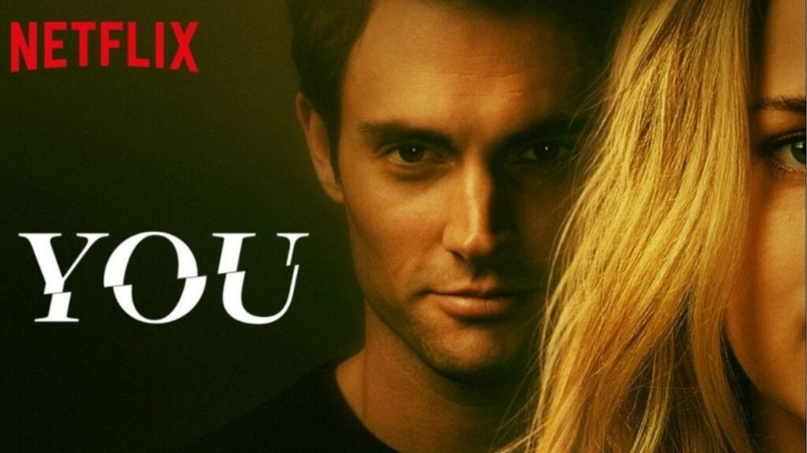

YOU

A série "You" é um suspense psicológico que mistura romance, drama e crime, lançada originalmente em 2018 pela
Netflix (as primeiras temporadas em parceria com o canal Lifetime).
A trama gira em torno de Joe Goldberg (interpretado por Penn Badgley), um gerente de livraria aparentemente
charmoso e inteligente, mas que esconde um lado extremamente obsessivo e perigoso. Ele se envolve romanticamente
com mulheres e, em nome do “amor”, passa a espioná-las, manipular pessoas ao redor e até cometer crimes para
manter o relacionamento ou “protegê-las”.
Melhores Episódios:
- You é aquele tipo de série que tu começa achando que vai ser só um romancezinho e, do nada, já tá com o olho arregalado pensando “meu Deus, esse cara é maluco!”. Logo no primeiro episódio da 1ª temporada já é brabo, porque o Joe conhece a Beck e parece fofinho, mas tu já saca que tem algo errado, e aí começa a stalkear ela de um jeito tão bizarro que até arrepia. Aí no episódio da viagem pra casa da Peach, mano, tensão pura, tu nem pisca. E o final da temporada? É simplesmente um tapa na cara, com o Joe fazendo tudo que a gente não imaginava (ou imaginava, mas não queria acreditar).
Na 2ª temporada, o segundo episódio já deixa a pulga atrás da orelha sobre a Love, tu começa a pensar “essa menina não é tão santa assim”. No penúltimo episódio, o bagulho explode, cheio de revelações e brigas, e no último… mano, plot twist atrás de plot twist, tu fica sem fôlego.
A 3ª temporada começa mostrando o Joe e a Love tentando ser “família perfeita” no subúrbio, mas é aquele caos disfarçado. Lá pro episódio 8 o negócio fica insano, com traições, planos e segredos vindo à tona. No final, é tipo “ok, agora não tem mais volta”, Joe mostra quem ele é de verdade.
Na 4ª temporada, o quinto episódio da primeira parte é surreal, o mistério do assassino “Eat the Rich” tá no auge e tu não sabe mais em quem confiar. Já no finalzinho da temporada, principalmente no episódio 9 e no último, Joe basicamente larga a máscara e diz “é isso, eu sou assim mesmo” — e é aí que tu percebe que ele não vai mudar nunca.
Melhores personagens de You:
- Joe Goldberg
- Love Quinn
- Forty Quinn
- Marienne Bellamy
- Ellie Alves